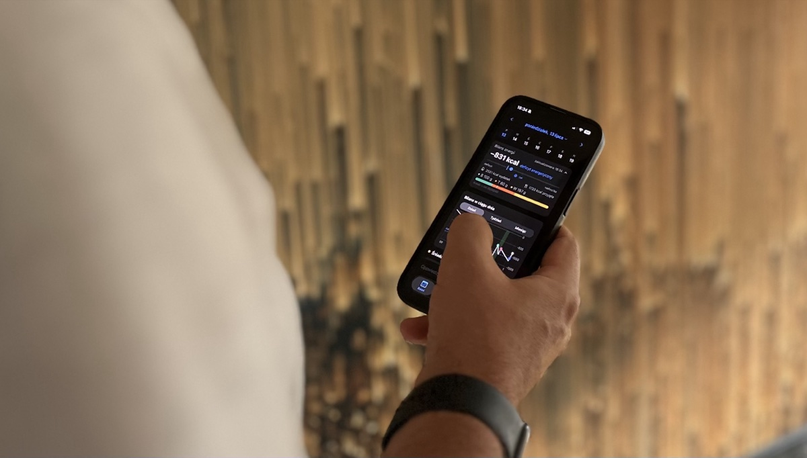
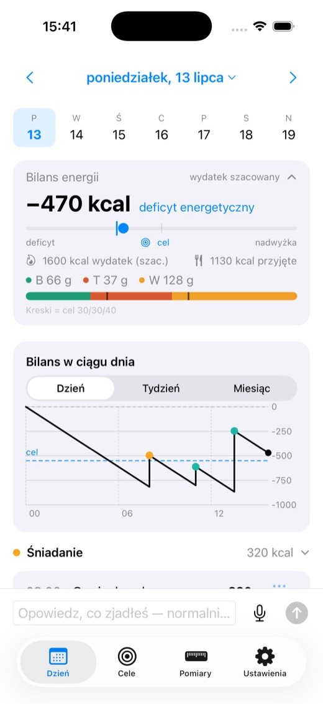
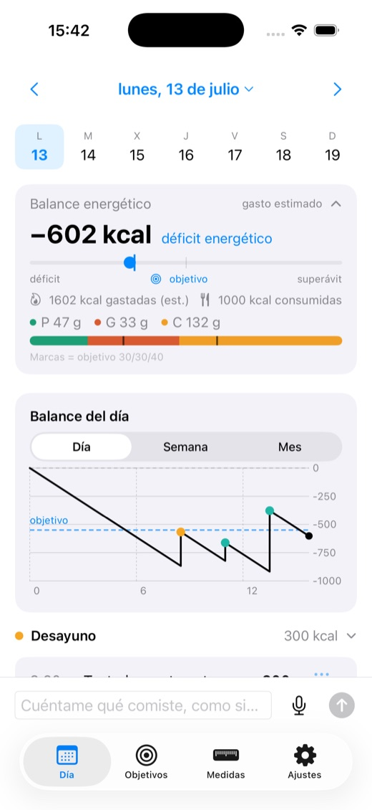
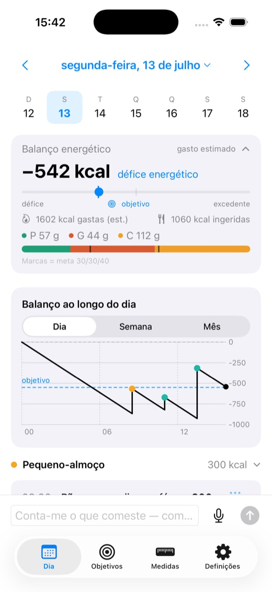
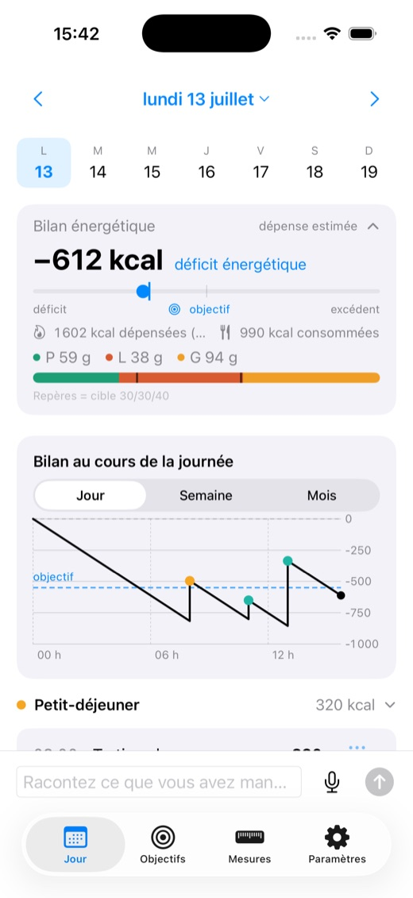
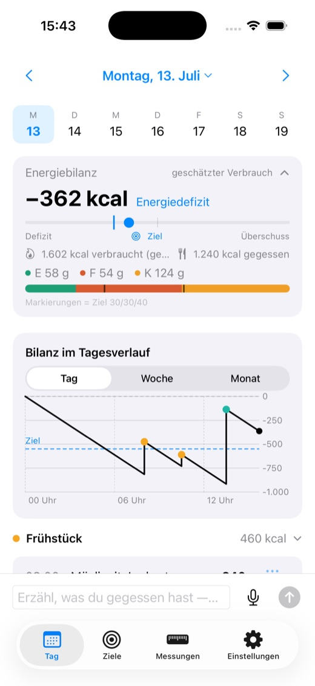

Bez ważenia, bez skanowania kodów, bez szukania w bazie. Opisujesz posiłek normalnie — jak koledze — a Fiteo szacuje kalorie i makro.
Za darmo w becie · na razie iPhone (TestFlight)

Zaloguj to, co naprawdę jesz — od paelli po schabowego.





Bez wpisywania, bez zdjęć. Opisujesz posiłek po swojemu — konwersacyjny model zamienia to na kalorie i makro.
Spalone z aktywności wchodzą do bilansu z Apple Health — automatycznie, bez wpisywania.
Przyjęte minus spalone, względem celu na dziś — tyle kalorii Ci zostaje. Na bieżąco, na jednym ekranie.
Całym zdaniem, z ilościami albo bez. „Owsianka z bananem, było tego sporo."
Kalorie i makro — bez ważenia i gramów. Wielokrotności też („3× kanapka").
Przyjęte vs spalone (z Apple Health), z celem na dziś.
Kilka minut dziennie, szczery feedback. Za darmo w trakcie testów.